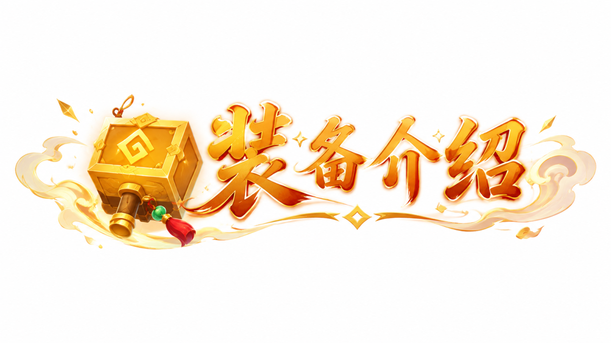
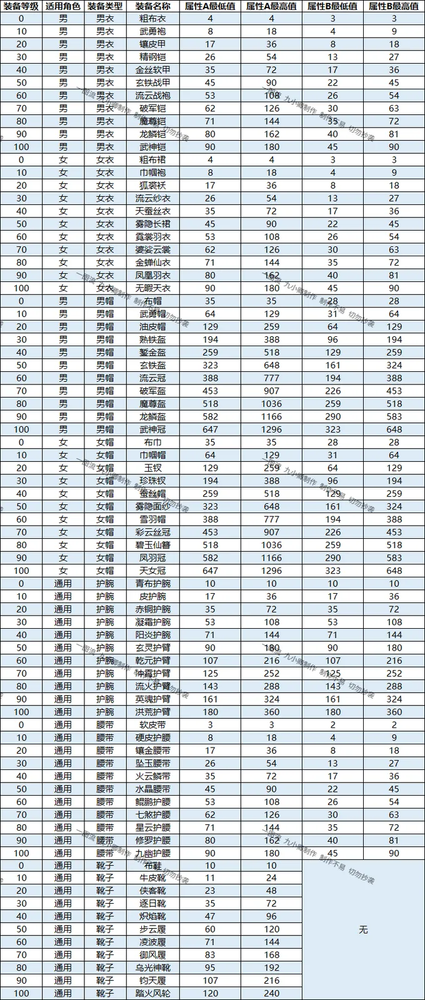
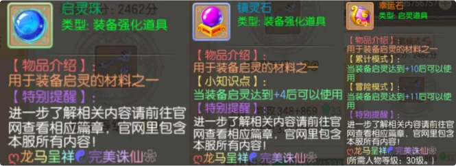
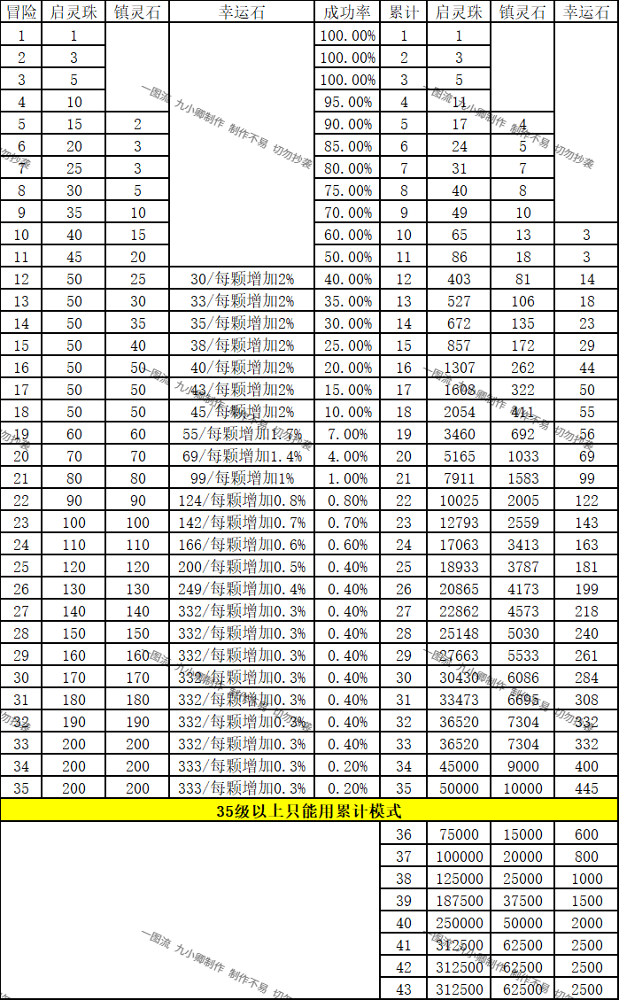
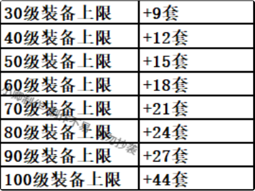
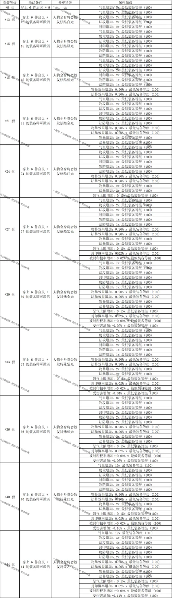
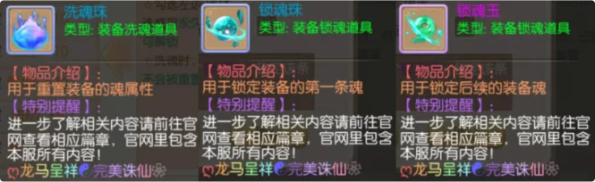
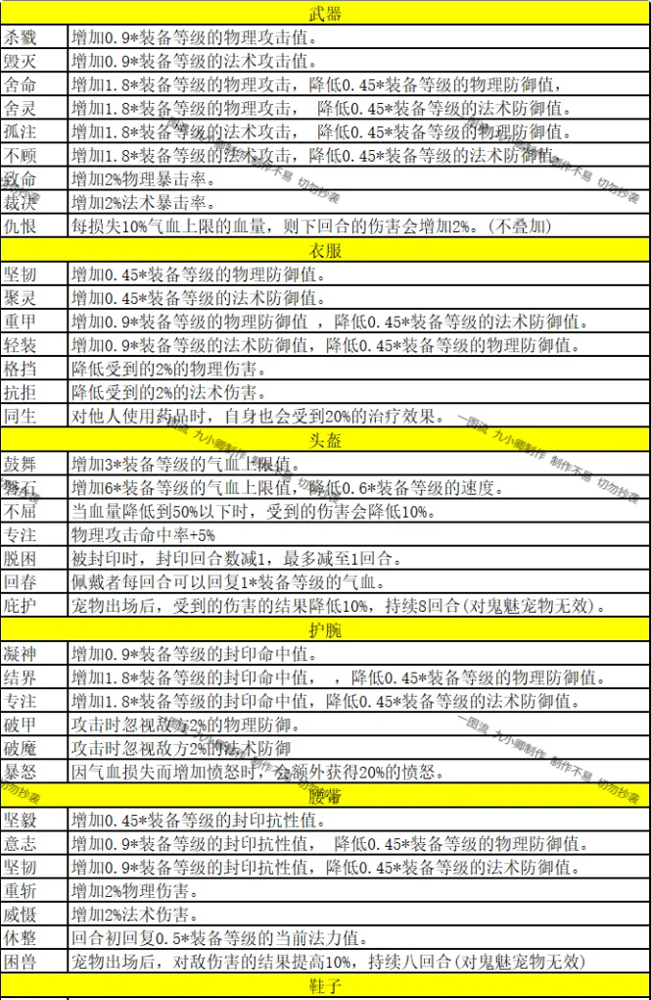
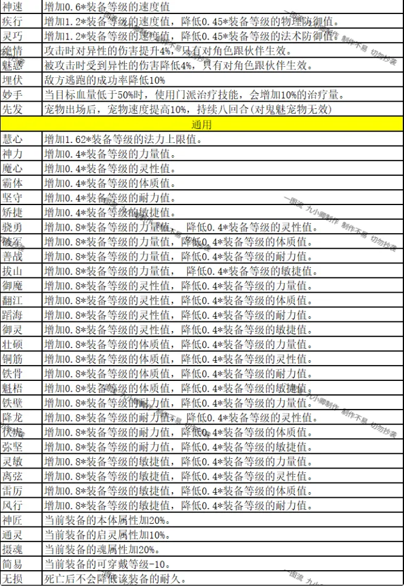

在打造装备的过程中 ，有三条硬性指标决定了所打造出来的装备是否极品。
第一条：装备的初始品级 ，这一数值位于装备的上方 ，通过颜色可以判别出装备属性是否足够极品 ，可以参照如下颜色：橙色 > 紫色 > 蓝色 > 绿色 > 白色 ，所以橙品是最佳的。（调整后目前打造所有装备均为橙色 , 没有其他品质的了）
第二条：装备的基础属性 ，越接近满属性越极品
第三条：装备的特技 ，单特技＞ 没特技（调整后目前连续打造同一件装备第 21 次必出带特技的装备）
注： 110 和 120 装备也可以手打，作者懒得更新梳理了，理解万岁！




当 6 件装备都达到指定启灵等级时可激活套装效果



